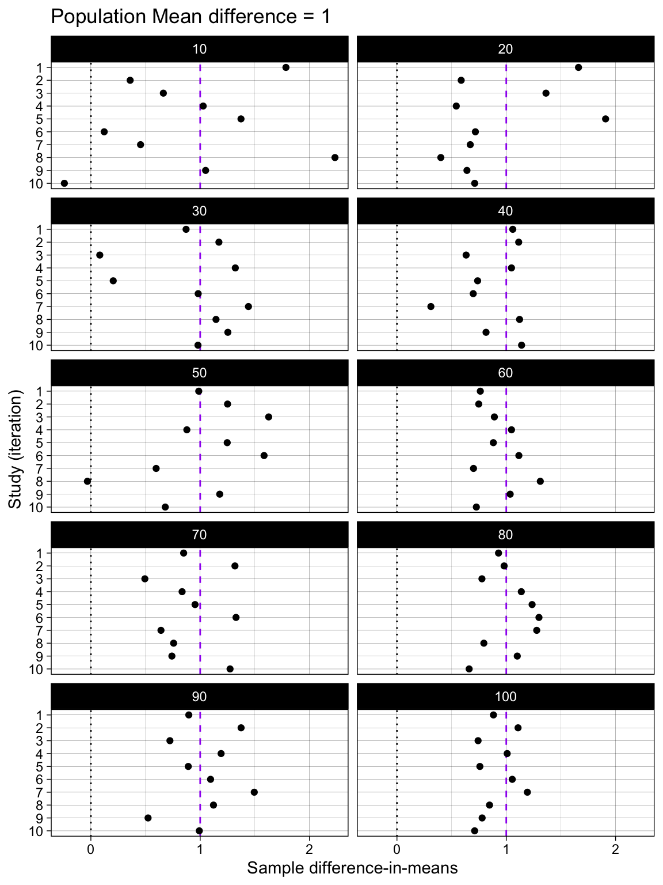
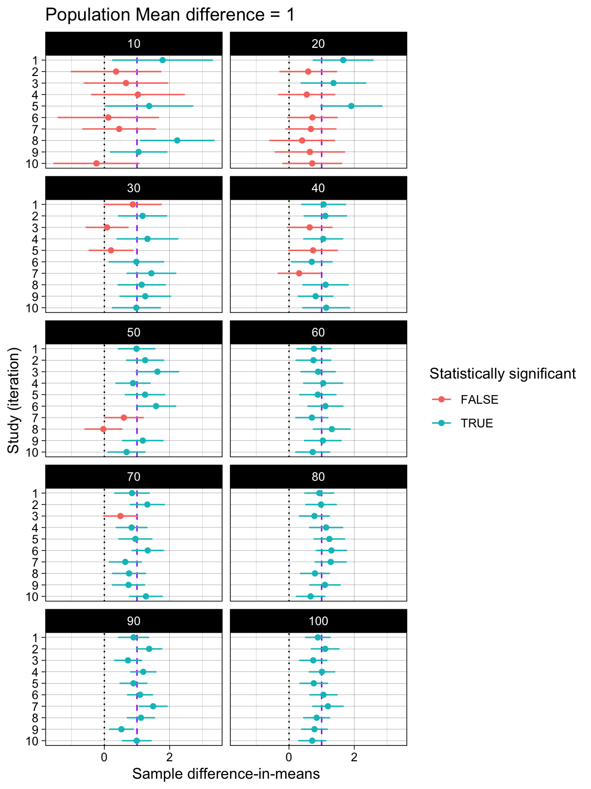
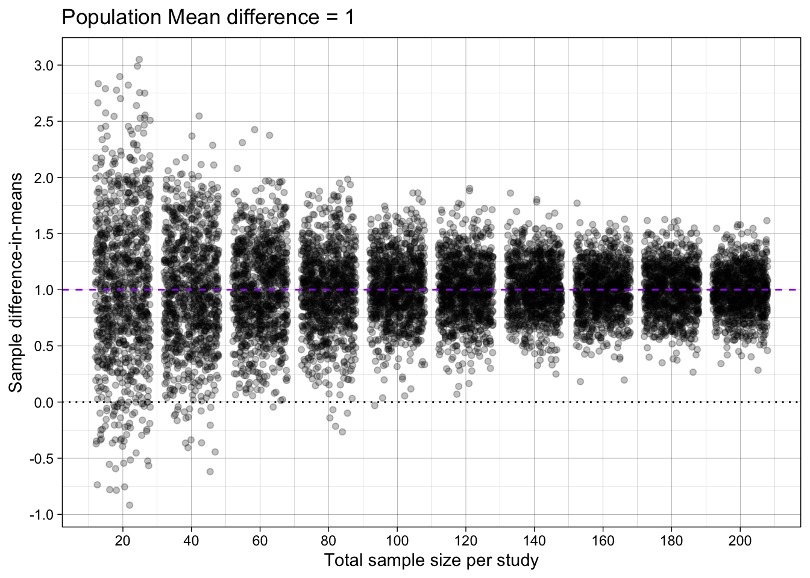
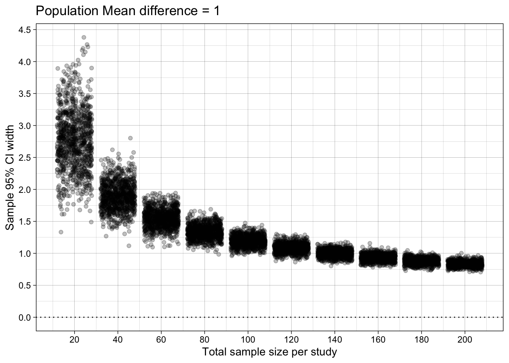
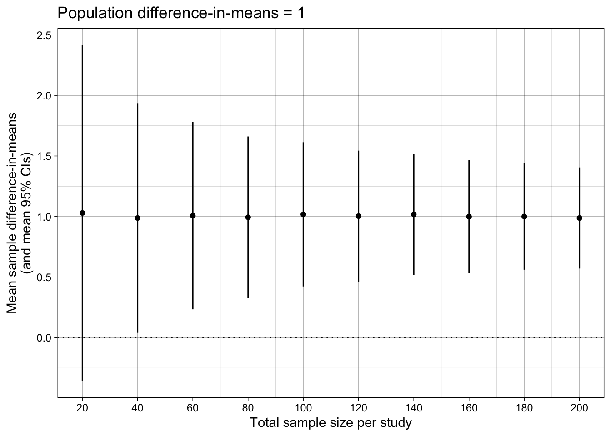
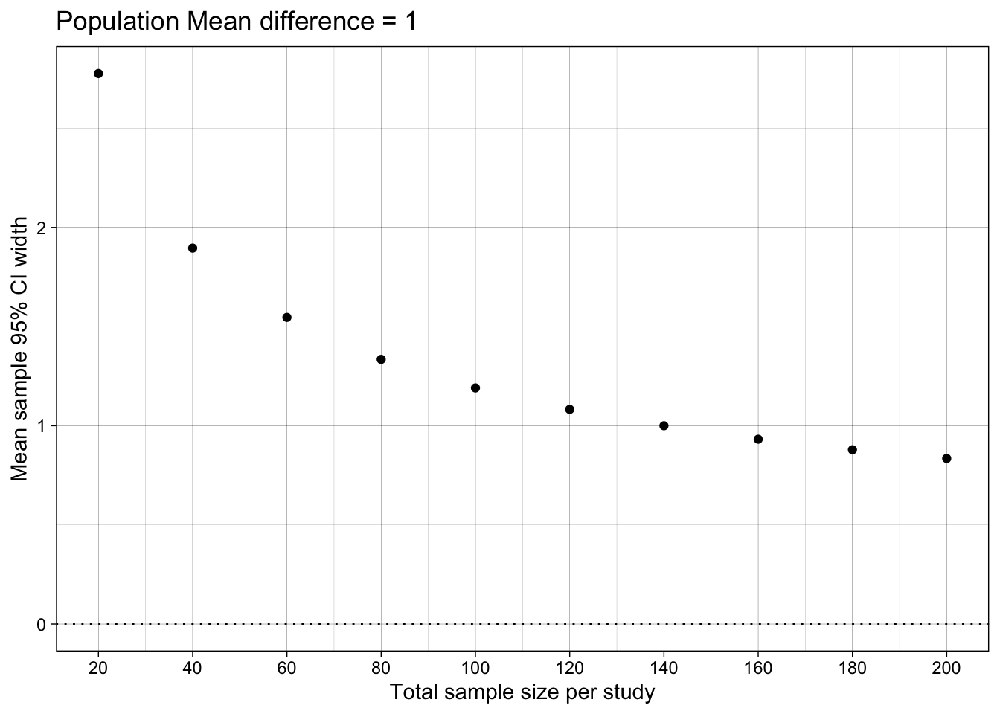

# dependencies
library(tidyr)
library(dplyr)
library(furrr)
library(parameters)
library(stringr)
library(forcats)
library(ggplot2)
library(scales)
library(ggstance)
library(patchwork)
library(janitor)
library(effectsize)
library(ggstance)
library(knitr)
library(kableExtra)
# set up parallelization
plan(multisession)12 Estimation ✎ Rough draft
12.1 Simulation
What does this simulation simulate? Specifically:
- What study design in the individual studies, and which part of the code should you inspect to understand this?
- What data generating process, and which part of the code should you inspect to understand this?
- What analysis, and which part of the code should you inspect to understand this?
- What experiment is set up in the simulation as a whole, and which part of the code should you inspect to understand this?
The last two questions require us to first gain an understanding of how results are summarized across iterations.
- What is the estimand quantified in the summary of the simulations’ results, and which part of the code should you inspect to understand this?
- Putting all the above together, how would you describe the research question asked by the simulation as a whole?
# functions for simulation
generate_data <- function(n_per_condition,
mean_control,
mean_intervention,
sd) {
data_control <-
tibble(condition = "control",
score = rnorm(n = n_per_condition, mean = mean_control, sd = sd))
data_intervention <-
tibble(condition = "intervention",
score = rnorm(n = n_per_condition, mean = mean_intervention, sd = sd))
data_combined <-
bind_rows(data_control,
data_intervention) |>
mutate(condition = factor(condition, level = c("intervention", "control")))
return(data_combined)
}
analyse <- function(data){
fit <- t.test(
formula = score ~ condition,
var.equal = TRUE, # students t test: assumes equal variances
data = data
)
results <- fit %>%
model_parameters() %>%
as_tibble() %>%
janitor::clean_names() %>%
# create estimand
mutate(confidence_interval_width = ci_high - ci_low) |>
# select columns of interest
select(mean_diff = difference, # for parameter recovery
ci_low, # plotting
ci_high, # plotting
confidence_interval_width) # estimand
return(results)
}
# simulation parameters
experiment_parameters <- expand_grid(
n_per_condition = seq(from = 10, to = 100, by = 10),
mean_control = 4,
mean_intervention = 5,
sd = 1.5,
iteration = 1:1000
)
# set seed
set.seed(43)
# run simulation
simulation <- experiment_parameters |>
mutate(generated_data = future_pmap(.l = list(n_per_condition = n_per_condition,
mean_control = mean_control,
mean_intervention = mean_intervention,
sd = sd),
.f = generate_data,
.progress = TRUE,
.options = furrr_options(seed = TRUE))) |>
mutate(results = future_pmap(.l = list(data = generated_data),
.f = analyse,
.progress = TRUE,
.options = furrr_options(seed = TRUE)))12.2 Iteration-level results
12.2.1 Just a few iterations
Difference-in-means
simulation |>
unnest(results) |>
group_by(n_per_condition) |>
slice(1:10) |>
ungroup() |>
# plot
ggplot(aes(mean_diff, iteration)) +
geom_vline(xintercept = 0, linetype = "dotted") +
geom_vline(xintercept = 1, linetype = "dashed", color = "purple") +
geom_point() +
scale_y_continuous(trans = "reverse",
breaks = breaks_pretty(n = 10),
name = "Study (iteration)") +
scale_x_continuous(breaks = breaks_pretty(n = 3),
#limits = c(0,1),
name = "Sample difference-in-means") +
theme_linedraw() +
theme(panel.grid.minor.y = element_blank()) +
ggtitle("Population Mean difference = 1") +
facet_wrap(~ n_per_condition, ncol = 2)
Difference-in-means and their 95% Confidence Intervals
simulation |>
unnest(results) |>
group_by(n_per_condition) |>
slice(1:10) |>
ungroup() |>
# plot
ggplot(aes(mean_diff, iteration, color = ci_low > 0)) +
geom_vline(xintercept = 0, linetype = "dotted") +
geom_vline(xintercept = 1, linetype = "dashed", color = "purple") +
geom_linerangeh(aes(xmin = ci_low, xmax = ci_high)) +
geom_point() +
scale_y_continuous(trans = "reverse",
breaks = breaks_pretty(n = 10),
name = "Study (iteration)") +
scale_x_continuous(breaks = breaks_pretty(n = 3),
#limits = c(0,1),
name = "Sample difference-in-means") +
theme_linedraw() +
labs(color = "Statistically significant") +
theme(panel.grid.minor.y = element_blank()) +
ggtitle("Population Mean difference = 1") +
facet_wrap(~ n_per_condition, ncol = 2)
12.2.2 All the iterations
Difference-in-means
simulation |>
unnest(results) |>
# plot
ggplot(aes(n_per_condition*2, mean_diff)) +
geom_hline(yintercept = 0, linetype = "dotted") +
geom_jitter(alpha = 0.25) +
geom_hline(yintercept = 1, linetype = "dashed", color = "purple") +
scale_x_continuous(breaks = breaks_pretty(n = 10),
name = "Total sample size per study") +
scale_y_continuous(breaks = breaks_pretty(n = 10),
#limits = c(0,1),
name = "Sample difference-in-means") +
theme_linedraw() +
scale_color_viridis_d(begin = 0.4, end = 0.6) +
ggtitle("Population Mean difference = 1") 
Difference-in-means’ 95% Confidence Interval width
simulation |>
unnest(results) |>
# plot
ggplot(aes(n_per_condition*2, confidence_interval_width)) +
geom_jitter(alpha = 0.25) +
geom_hline(yintercept = 0, linetype = "dotted") +
scale_x_continuous(breaks = breaks_pretty(n = 10),
name = "Total sample size per study") +
scale_y_continuous(breaks = breaks_pretty(n = 10),
#limits = c(0,1),
name = "Sample 95% CI width") +
theme_linedraw() +
scale_color_viridis_d(begin = 0.3, end = 0.7) +
ggtitle("Population Mean difference = 1")
12.3 Summarise across iterations
Remember: almost without exception, you must group_by() all factors that you experimentally manipualated in the expand_grid(), otherwise you are combining results across conditions, making it difficult to know what to conclude (i.e., apples-and-oranges comparisons).
# summarise results
results_summary <- simulation |>
unnest(results) |>
group_by(n_per_condition) |>
summarize(mean_difference_in_means = mean(mean_diff),
mean_ci_low = mean(ci_low),
mean_ci_high = mean(ci_high),
mean_confidence_interval_width = mean(confidence_interval_width))
# table
# remember: only round results as you're about to print a table
results_summary |>
mutate_if(is.numeric, round, digits = 1)| n_per_condition | mean_difference_in_means | mean_ci_low | mean_ci_high | mean_confidence_interval_width |
|---|---|---|---|---|
| 10 | 1 | -0.4 | 2.4 | 2.8 |
| 20 | 1 | 0.0 | 1.9 | 1.9 |
| 30 | 1 | 0.2 | 1.8 | 1.5 |
| 40 | 1 | 0.3 | 1.7 | 1.3 |
| 50 | 1 | 0.4 | 1.6 | 1.2 |
| 60 | 1 | 0.5 | 1.5 | 1.1 |
| 70 | 1 | 0.5 | 1.5 | 1.0 |
| 80 | 1 | 0.5 | 1.5 | 0.9 |
| 90 | 1 | 0.6 | 1.4 | 0.9 |
| 100 | 1 | 0.6 | 1.4 | 0.8 |
Difference-in-means
ggplot(results_summary, aes(n_per_condition*2, mean_difference_in_means)) +
geom_point() +
geom_linerange(aes(ymin = mean_ci_low, ymax = mean_ci_high)) +
geom_hline(yintercept = 0, linetype = "dotted") +
scale_x_continuous(breaks = breaks_pretty(n = 10),
name = "Total sample size per study") +
scale_y_continuous(breaks = breaks_pretty(n = 5),
#limits = c(0,1),
name = "Mean sample difference-in-means\n(and mean 95% CIs)") +
theme_linedraw() +
ggtitle("Population difference-in-means = 1")
Difference-in-means’ 95% Confidence Interval width
ggplot(results_summary, aes(n_per_condition*2, mean_confidence_interval_width)) +
geom_hline(yintercept = 0, linetype = "dotted") +
#geom_linerange(aes(ymin = min_ci_width, ymax = max_ci_width)) +
geom_point() +
#scale_y_continuous(name = "95% CI width\n(mean [min, max])", limits = c(0, NA)) +
scale_y_continuous(name = "Mean sample 95% CI width",
limits = c(0, NA)) +
scale_x_continuous(breaks = breaks_pretty(n = 9),
name = "Total sample size per study") +
theme_linedraw() +
scale_color_viridis_d(begin = 0.3, end = 0.7) +
ggtitle("Population Mean difference = 1")
12.4 TODO
- Add precision vs bias (accuracy) plots and explanations, with german terms
- Add link to definition of CI like https://www.the100.ci/2024/12/05/why-you-are-not-allowed-to-say-that-your-95-confidence-interval-contains-the-true-parameter-with-a-probability-of-95/
- Check understanding of pmap and unnest and nested data.
- Add explainer on nested data
- Explain unnest() by relating it to psych data: one row per participant, one nested data frame of trial level data per row.
- Maybe find German terms for bias and accuracy (if they help)
- add examples of map headaches with argument ordering problems, and why we used named lists
- add example of sth like a p value (only) simulation that uses map_dfr() vs pmap() and the relative pros/cons; the former produces simpler results (avoids unnest) but requires you to know the map functions, the latter allows you to use the same code workflow for everything (pmap with named list).